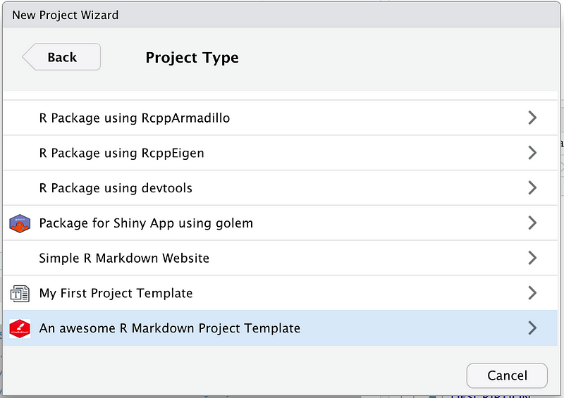
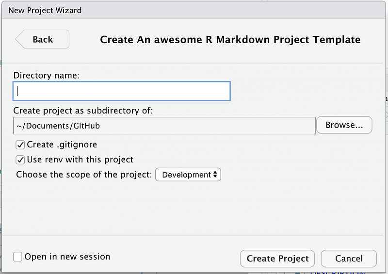

create_rmarkdown_project <- function(path, ...) {
# collect ellipsis arguments
dots <- list(...)
# rest of the function below
}
One of my favourite R packages is {golem}. With a few clicks, you can create a reproducible starting point for your Shiny app. Using a framework like {golem} is important in teams: it ensures that every developer starts from the same blueprint.
As a consultant I have worked with countless teams and every developer on each team works in their own way. This is particularly true in teams made by analysts rather than traditional developers. While on some occasions this can be acceptable, it makes it harder to share work between team members.
How can we standardize our R projects? The answer depends on what you do. If you use Shiny, then use {golem}. If you develop a package, then the structure of your workflow is defined by the standard design of an R package.
But what if you have, for instance, a custom structure for an R Markdown report that you want to use as a reference for all your data analysis projects? You could store it in a shared folder and have your developers access it from there. You could have a dedicated repo to fork from. But you could also copy from {golem} and create your own RStudio project template.
The idea of using RStudio project templates is not new. RStudio has been supporting custom templates since version 1.1. However, I only recently came across their actual implementation. I thought there might be more developers out there who could benefit from using this with their team.
The basics
The basic idea behind a custom template is to create an R package according to some defined specifications. Once installed, this package will make the RStudio template available through the New Project wizard. To do this we need three ingredients:
- A template.
- A function to create your project template.
- The file rstudioProjectTemplate.dcf.
The template
For the purpose of this guide, the aim of the template is irrelevant. We will use a simple template with an R Markdown report. The R Markdown report is a pretext. You can use anything you like to create your project template.
We will save the template into ./inst/<YOUR TEMPLATE>.
The R Package
As expected, we are following the standard structure of an R package. Here is an overview with the important parts.
.
├── DESCRIPTION
├── NAMESPACE
├── R
│ └── create_project.R
└── inst
├── rstudio
│ └── templates
│ └── project
│ ├── rmarkdown_icon.png
│ └── rstudioProjectTemplate.dcf
└── templatedemo
└── [...]The key elements are:
- The R folder contains our logic to create the project.
- The
./inst/templatedemofolder contains a copy of our project template. - The
.inst/rstudio/templates/project/rstudioProjectTemplate.dcffile contains the specification for the UI wizard.
The function to create the project
The function to create the project goes in the R folder. You must have this function, as it is the one picked up to initialize the template in the wizard. The function can have any name, as long as it matches what is specified in the Binding argument of the dcf file (see below). The first argument to this function must always be path. This will be the path where to create our new project. We will see later how we can define extra arguments.
Let’s break down the main parts of this function.
The arguments
As mentioned above, the first and only mandatory argument is path: we need to tell RStudio where we want to create the package. All other arguments can be specified, or passed as ellipsis .... We can use the syntax dots <- list(...) to collect all the unnamed arguments.
The logic
This function has all the logic needed by our template. In our specific case:
- It copies the template from the template installation folder to the specified path.
- It activates renv.
- It installs dependencies.
- It initializes a repo if requested
- It adds some tracking info to the new project readme.
You can see the full code in the repository linked at the end of the article, but here are the main blocks.
Copy over the code
demoPath_sys <- function (..., lib.loc = NULL, mustWork = FALSE){
system.file(..., package = "rstudiotemplate", lib.loc = lib.loc, mustWork = mustWork)
}
from <- demoPath_sys("templatedemo")
fs::dir_copy(
path = from,
new_path = path,
overwrite = TRUE
)When we install the package, the template is saved in the R library. Our create_rmarkdown_project function will copy the template from the R library to the location specified by the user.
Update references
# main code to replace all references to templatedemo
replace_package_name(
copied_files,
basename(path),
path
)
# utility funciton to loop through all the files we need to make replacements in
replace_package_name <- function(copied_files,
package_name,
path){
# Going through copied files to replace package name
for (f in copied_files) {
copied_file <- file.path(path, f)
try({
replace_word(
file = copied_file,
pattern = "templatedemo",
replace = package_name
)
},silent = TRUE)
}
}
# utility funciton to make a replacement into a single file
replace_word <- function (file, pattern, replace){
suppressWarnings(tx <- readLines(file))
tx2 <- gsub(pattern = pattern, replacement = replace, x = tx)
writeLines(tx2, con = file)
}
# main code to replace all references to templatedemo
replace_package_name(
copied_files,
basename(path),
path
)When we create the template, we put placeholders in place. For instance, in the DESCRIPTION file the name of the package is templatedemo. When a user creates a new project we replace all the placeholders with the actual name specified by the user. The snippet above accomplishes this. It gets a list of all files we copied over, then loops through them looking for the keyword templatedemo. The keyword is then replaced with the user’s new project name.
Other tasks
# activate renv if needed
if(dots$useRenv){
renv::activate(project = getwd())
}
# if not needed, remove the .gitignore from the copied template
if(!dots$createGitignore){
file.remove('.gitignore')
}
# add the specified environmetn to the .Renviorn file
addEnvToRenviron(tolower(dots$chosenEnv))In the Wizard UI, we allow the user to specify a few more parameters. This part of the code takes actions based on the extra arguments: activate renv, use a .gitignore, register the R_CONFIG_ACTIVE variable.
The wizard UI
Here is how our Wizard UI looks like.

The “Directory name” and the “Create project as subdirectory of” fields are created by RStudio by default. Together they will form the path argument of our create_rmarkdown_project function.
The footer is also provided by RStudio. We do not need to worry about it.
The options we customised are the ones about the .gitignore, renv, and the “Choose the scope of the project”.
The dcf file
The wizard UI is defined into the rstudioProjectTemplate.dcf file. Let’s have a look at our dcf.
Binding: create_rmarkdown_project
Title: An awesome R Markdown Project Template
OpenFiles: README.md
Icon: rmarkdown_icon.png
Parameter: createGitignore
Widget: CheckboxInput
Label: Create .gitignore
Default: On
Position: left
Parameter: useRenv
Widget: CheckboxInput
Label: Use renv with this project
Default: On
Position: left
Parameter: chosenEnv
Widget: SelectInput
Label: Choose the scope of the project
Fields: Production, Development, Test
Default: Development
Position: leftThe first few lines define some generic behaviour:
Binding: the function used to create the project.Title: the title of the template, as displayed in the wizard.OpenFiles: Once the new project opens, show this file in the new session.Icon: An icon to display next to the title. Should be a png of 64 KB or less.
The lines below the Binding block define different elements of the UI wizard. We use the CheckboxInput and the SelectInput. Another option is the TextInput, which is a free text input that behaves like the “Directory name” field. Each of these inputs has a Parameter argument. This is what will be used as extra arguments to the create_rmarkdown_project() function.
Conclusion
That is all. Really, it is this simple. Create an R package with the minimal structure defined above, install it, and you are good to go. Just use the New Project wizard and you have a reproducible project that all your team, or organization, can use.
Thanks for reading, and remember to follow me to get notified on new stories.